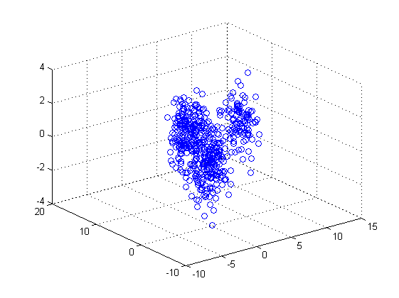
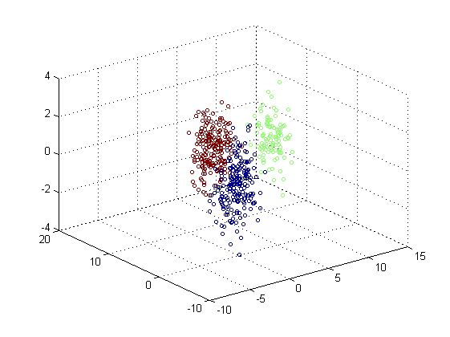
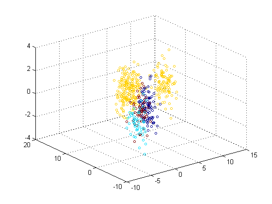

Contents
clc; clear;
LOADING DATASET
load dataset3;
DS=[X;Y;Z];
figure, scatter3(X,Y,Z);
 CLUSTERING DATA WITH KMEANS (K=3)
K=3; [IDC,SUB]=kmeansClustering(DS,K); figure, scatter3(X,Y,Z,10*ones(size(IDC)),IDC);
CLUSTERING DATA WITH KMEANS (K=4)
K=4; [IDC,SUB]=kmeansClustering(DS,K); figure, scatter3(X,Y,Z,10*ones(size(IDC)),IDC);